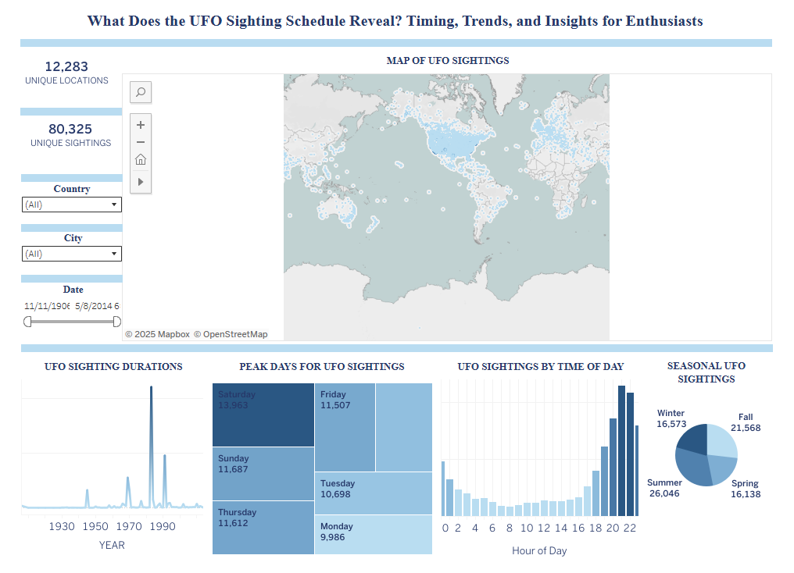

Tableau dashboard exploring global UFO sightings from 1900–2020.
This project visualizes over a century of UFO sightings using an interactive Tableau dashboard. It highlights patterns in reported sightings across locations, times, shapes, and durations, offering an exploratory interface for enthusiasts and data analysts alike.
• Cleaned and structured a global dataset of UFO sightings from 1900–2020
• Used Tableau to create filters for shape, duration, and country
• Built choropleth maps, heat grids, bar and line charts
• Included slicers and drop-downs for deep-dive exploration
Tableau, Excel, GeoJSON, Data Visualization
• Handling inconsistent formats in dates, coordinates, and descriptions
• Designing clean filters without overcrowding the dashboard
• Visualizing distribution patterns across multiple dimensions
This project sharpened my skills in Tableau and dashboard UX, while reinforcing the value of clean data preprocessing. I also explored geographic storytelling through visual analytics.

Figure 1. Tableau dashboard visualizing UFO sightings by date, time, season, location, and report count using interactive filters and maps.
View Dashboard on Tableau Public